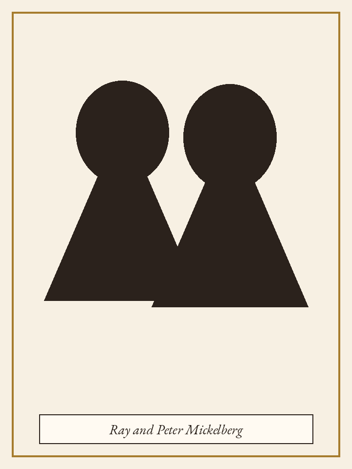
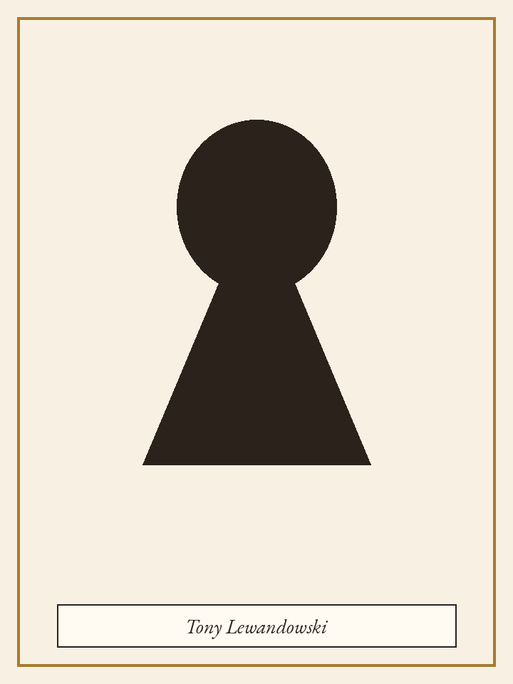
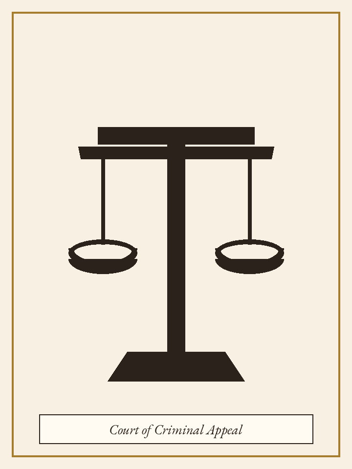

Perth, 1989
A gold bar is sent to a television station, to a reporter on the news desk. A note comes with it.
The Mickelbergs are innocent and rotting in jail.
The bar is heavy. The sentence is short. The convictions have not moved.
History Case File · The Perth Mint Swindle, 1982
A page from 1989 · Perth, Western Australia
Case no. PERTH MINT SWINDLE / 1982 Case 41 · June 1982
Open the envelope. Read the 1989 page. Ask three witnesses. Then write your finding.
Read the 1989 page through to the last line.
Perth, 1989
A gold bar is sent to a television station, to a reporter on the news desk. A note comes with it.
The Mickelbergs are innocent and rotting in jail.
The bar is heavy. The sentence is short. The convictions have not moved.
Case 41 · Year 10 · Read
This file names living people. It does not say that any living person committed the swindle, or fabricated evidence. Attribute every claim. The 2004 court quashed the convictions. It did not decide who obtained the gold. No one has been convicted of the swindle since.
Read the 1989 page through to the last line. Then read what this file can agree on. After that, three witnesses will be asked the same three questions.
Key claims still disputed
What is agreed · from the 1982–2008 file
On 22 June 1982, gold left the Perth Mint in exchange for three stolen building-society cheques. The quantity is usually given as 49 bars, about 68 kilograms, then valued at about $653,000. Couriers collected it. The investigation said it was taken to an office in Subiaco and later towards Jandakot Airport. It then disappeared.
Ray, Peter and Brian Mickelberg were charged and, in 1983, convicted in the District Court of Western Australia (Heenan CJDC). Ray was sentenced to 20 years, Peter to 16 years, and Brian to 12 years. Brian’s convictions were quashed on appeal in November 1983, and he was released after about nine months. He died in a plane crash in 1986.
In 1989, gold later identified with the missing bullion was sent, anonymously, to Channel 7 in Perth. First, a bar was sent to the reporter Alison Fan, with a note. About three months later, gold pellets in containers were left at the station. The Mint said the gold matched what had left in 1982. The convictions of Ray and Peter still stood.
In June 2002, former detective Tony Lewandowski swore an affidavit about the investigation. He said that he and Don Hancock had fabricated the notes of interview dated 26 July 1982, after 2 September 1982, and that evidence they had given about those “confessions” was false. Hancock had died in 2001. Lewandowski died in 2004. Hancock was never charged or convicted of fabricating evidence.
On 2 July 2004 the Court of Criminal Appeal of Western Australia, in Mickelberg v The Queen [2004] WASCA 145, allowed the appeals of Ray and Peter, quashed their convictions, and did not order a retrial. The majority was Malcolm CJ and Steytler J. Murray J dissented. The court found a substantial miscarriage of justice. It did not decide who obtained the gold. No one has been convicted of the swindle since.
In December 2007, the WA Police Commissioner, Karl O’Callaghan, issued a public apology, in the context of a defamation settlement over comments made after the 2004 judgment. The statement said the police accepted the court’s decision, and that Ray and Peter were, and remained, entitled to the presumption of innocence. In January 2008 the State Government announced an ex gratia payment of $500,000 to each of them, in addition to money already paid toward legal costs of the later appeals. A 2021 ex gratia payment has not been found in the sources checked for this file.
Green on this page marks what can be agreed. Amber, used in Super Sleuths, marks what is still disputed or was added later.
Case 41 · Year 10 · The Case
The same three questions for each: What did they say they saw? · Could they really have seen it? · Why might they say it? Each has a plain silhouette, not a photograph. Living people are not pictured and are not given dates. No likeness of a real person has been invented.
A note on living people and the courts
This file names living people. It does not say that any living person committed the swindle, or fabricated evidence. Attribute every claim. The 2004 court quashed the convictions. It did not decide who obtained the gold. No one has been convicted of the swindle since.

The two brothers whose 1983 convictions were quashed in 2004 · Living — no dates given here
Their own accounts, from arrest through the appeals and after the convictions were quashed.
Source. Public statements and evidence over many years, including accounts considered in Mickelberg v The Queen [2004] WASCA 145. Living people: no dates, and no photographs, on these pages.
What they said. They have always said they did not take the gold. They say police, including Don Hancock and Tony Lewandowski, fabricated admissions. Peter has said that, after his arrest on 26 July 1982, he was stripped and assaulted at Belmont. They have also said that a fingerprint used in the case was not honestly obtained. That last claim is their allegation. This file does not treat it as a court finding.
Could they really have seen it? They were there for their own arrests, interviews and trials. They could not see everything the police did with documents when they were not in the room. They have a clear interest in clearing their names. A later affidavit by Lewandowski supported part of what Peter had said about the interview and the notes. The 2004 court did not decide who obtained the gold.
Why might they say it? To have the convictions set aside, and to be believed. An account maintained for many years is still one side of a contested file. It has to be weighed with the court’s reasons, not instead of them.

Former detective on the investigation · Died 2004
A sworn affidavit, given in 2002, after Hancock’s death, and later considered by the Court of Criminal Appeal.
Source. Affidavit of June 2002, as reported at the time (including the Sydney Morning Herald, 11 June 2002) and as considered in Mickelberg v The Queen [2004] WASCA 145. Lewandowski admitted that evidence he had given earlier was false.
What they said. He swore that the notes of interview dated 26 July 1982 were not a true contemporaneous record. He said he and Don Hancock fabricated them after 2 September 1982, and that evidence they later gave about those notes, at trial and on appeal, was false. As reported from the affidavit, he said he had told Hancock they did not have enough evidence, and that Hancock replied, “Don’t worry, it will get better.” He also said Hancock punched Peter and ordered him stripped. Those are Lewandowski’s sworn claims, made after Hancock was dead and could not answer them.
Could they really have seen it? He had been in the investigation and in the interview room. He was also a man who admitted he had lied on oath. The 2004 court had to look closely at a recanting police witness: to weigh relevance, cogency and credibility, not to take every word as proved.
Why might they say it? He said he was telling the truth at last. He spoke after Hancock’s death. A confession of perjury can be evidence. It can also be self-serving. The court, not this card, decides how far it can go.

Mickelberg v The Queen [2004] WASCA 145 · 2 July 2004
The court’s published reasons, on an Attorney-General’s reference of the whole case, heard as if it were an appeal.
Source. Mickelberg v The Queen [2004] WASCA 145 (Malcolm CJ, Murray J, Steytler J), 2 July 2004, available on AustLII. This card is the court, not a person. No judge is pictured.
What they said. The majority, Malcolm CJ and Steytler J, allowed the appeals, quashed the convictions of Ray and Peter, and did not order a retrial. They held that there had been a substantial miscarriage of justice. In the light of the fresh evidence, there was a significant possibility that a reasonable jury would have acquitted. The remaining circumstantial evidence, they held, did not make guilt inevitable. Murray J dissented: he would have dismissed the appeals. The court did not name another person as the offender, and it did not try the swindle again.
Could they really have seen it? The court had the trial record, the later evidence, and the power to quash a conviction. It was not an eyewitness to 1982. A 2–1 decision is still the judgment of the court. A dissent is part of the record, not a hidden extra verdict.
Why might they say it? To decide whether the 1983 convictions could stand, on the whole of the evidence then before the court. A court’s reasons are not a memoir. They are also not a finding, beyond what the orders actually say, about who obtained the gold.
Case 41 · Year 10
The three witness cards are Ray and Peter Mickelberg, Tony Lewandowski, and the Court of Criminal Appeal. Further people and claims — including Brian Mickelberg, Alison Fan, Don Hancock, and later allegations about a fingerprint — are in Super Sleuths. This finding is about what the records can prove, not about inventing a new verdict.
You have a 1989 page, a short agreed file, and three witnesses. The opening page is one reported sentence from 1989, set in type. It is not the whole record. Say what you think the records can prove, what the court actually decided, and what you still can’t know. Do not name a living person as the person who took the gold, or as a person who fabricated evidence, unless a court has found that.
What can the records prove?
Why it still matters
The Perth Mint swindle is still told as a thriller, and as a scandal about the police and the courts. The file is open because the 2004 court quashed the convictions and did not decide who obtained the gold, and because no one has been convicted of the swindle since. What a court decides, and what a story claims, are not the same thing.
Case 41 · Year 10 · Super Sleuths
Go further only if you want to. Amber marks what is still disputed, or what later writers added. Do not treat a later allegation as if the 2004 court had found it. Living people are not given dates here.
Gold later identified with the missing bullion reached Channel 7 in Perth twice in 1989. First, in July, a bar was sent to the reporter Alison Fan, with a note. About three months later, gold pellets in containers were left at the station after a journalist was tipped off. The Mint said the gold matched what had left in 1982.
The wording of the July note is later reported by ABC News (1 April 2023) as: “The Mickelbergs are innocent and rotting in jail.” A contemporaneous 1989 clipping with that exact sentence was not located for this file. A second note was reported with the later pellets; its exact wording is not securely established here. The opening page uses only the later-reported July sentence, set in type. It is not a photograph of the original note.
Read Mickelberg v The Queen [2004] WASCA 145 (2 July 2004) on AustLII, at least the orders and the majority’s conclusions. The petitioners were Raymond John Mickelberg and Peter Mickelberg. Brian was not a petitioner in 2004.
The majority (Malcolm CJ and Steytler J) allowed the appeals, quashed the convictions, and did not order a retrial. They found a substantial miscarriage of justice, and a significant possibility that a reasonable jury would have acquitted in the light of the fresh evidence. They held that the remaining circumstantial evidence did not make guilt inevitable — including that Peter had not been positively identified at the vehicle on 22 June 1982. Murray J dissented. The court did not decide who obtained the gold.
In June 2002, after Don Hancock’s death, Tony Lewandowski swore an affidavit. As later reported (including the Sydney Morning Herald, 11 June 2002) and as considered by the 2004 court, he said the notes of interview dated 26 July 1982 were fabricated after 2 September 1982, and that evidence given about those notes was false. He is also reported as swearing that he had told Hancock they lacked enough evidence, and that Hancock replied, “Don’t worry, it will get better.”
Lewandowski admitted that his own earlier evidence had been false. He died in 2004, before the July judgment. Hancock was never charged or convicted of fabricating evidence, and could not answer the 2002 affidavit. A court can receive a recantation and still have to weigh credibility.
It has been alleged that a fingerprint used in the case was not honestly obtained. Some later news features have stated that claim as fact. This file does not. The 2004 court is the place to look for what was actually found, and what was left as dispute. Keep this claim out of “What is agreed.”
On 15 December 2007, Commissioner Karl O’Callaghan issued a public apology on behalf of WA Police, in the context of a defamation settlement after comments made on the day of the 2004 judgment. The statement said the police accepted the court’s decision, and that Ray and Peter were, and remained, entitled to the presumption of innocence.
On 16 January 2008 the State Government announced an ex gratia payment of $500,000 to each of them, in addition to $658,672 already paid toward legal representation in later appeals. The brothers described the offer as “take it or leave it,” and said it was too low; they remained free to pursue civil claims against individuals. A 2021 ex gratia payment has not been found in the sources checked for this file.
Brian was convicted in 1983 and sentenced to 12 years. He was released after about nine months, following an appeal in 1983–84. Several reports, including later summaries of the 1983 appeal, say his convictions were quashed on 4 November 1983. A 2023 ABC feature says his sentence was “cut to eight months.” Those two wordings are not the same. This file does not silently choose the neater one. Brian died in a plane crash in 1986. He was not a petitioner in the 2004 appeal.
Later writing about the Mickelbergs has also discussed the so-called “Yellow Rose of Texas” gold, connected in public debate with Alan Bond. That is a separate matter. It is not evidence, in this file, of who obtained the Perth Mint gold in 1982, and it is not a finding of the 2004 court about the swindle.
The gold has never been fully recovered. The 2004 court did not name another person as the offender, and no one has been convicted of the swindle since. A gripping story can still leave that question open.
The opening page is a typographic setting, not a photograph of the original note. That explanation is kept off the student page. The only sentence set as the note is the wording later reported by ABC News, 1 April 2023: “The Mickelbergs are innocent and rotting in jail.” A contemporaneous 1989 clipping with that exact sentence was not located for this file. There were two deliveries in 1989. The draft’s constructed four-line note was not used, and must not be presented as a real document.
Do not state or imply, in the book’s voice, that any living person committed the swindle, or fabricated evidence, unless a court has found it. The 2004 court (Mickelberg v The Queen [2004] WASCA 145, 2 July 2004) quashed the convictions of Ray and Peter and ordered no retrial. It did not decide who obtained the gold. No one has been convicted of the swindle since. Living people get no dates and no photographs.
The user’s draft numbered this Case 39, with codes AC9HH10K10 / AC9HH10K11. Case 39 in the list is already Zelda D’Aprano. Those codes are First Nations rights-and-freedoms descriptions. This file is Case 41, Year 10, AC9HH10K20. A related Civics description, AC9HC10K03, may be mentioned to teachers only.
A 2021 ex gratia payment was not found. The documented dates are 15 December 2007 (WA Police apology) and 16 January 2008 (State ex gratia payments of $500,000 each, plus earlier legal-cost payments). ABC News, 1 April 2023, overstates some matters as fact and misplaces the trial in the Supreme Court; the judgment records a District Court trial before Heenan CJDC. Brian’s 1983–84 appeal is reported in conflicting wording. The fingerprint claim is an allegation, not an agreed fact in this file.
Further reading. Mickelberg v The Queen [2004] WASCA 145 (AustLII). Government of Western Australia media statement, 16 January 2008. ABC News, 15 December 2007 and 16 January 2008. ABC News, 1 April 2023 (use with care). Contemporaneous 2002 reporting of the Lewandowski affidavit, including the Sydney Morning Herald, 11 June 2002. Antonio Buti, Brothers: Justice, Corruption and the Mickelbergs (Fremantle Press, 2011). Australian Curriculum v9, Year 10 History, AC9HH10K20.
Magnified image